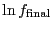
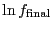

Now we will use the WL algorithm to compute  for the
for the  =
12 ten-state Potts model. (I used the code
wl-w.c
to obtain these results.) The
relevant run parameters we have to specify are the exponent for the
update rule of the factor
=
12 ten-state Potts model. (I used the code
wl-w.c
to obtain these results.) The
relevant run parameters we have to specify are the exponent for the
update rule of the factor  , the initial and final values of
, the initial and final values of  ,
and the flatness criterion for the histogram. The data presented here
are from a single run for which
= 1,
 = 10
,
and the flatness criterion for the histogram. The data presented here
are from a single run for which
= 1,
 = 10 , and
; this
prescribes a total of 26 independent values of
, and
; this
prescribes a total of 26 independent values of  for which a random
walk in energy space must be executed. A histogram is considered
sufficiently flat if the minimum value if the histogram is greater
than or equal to 80% of the mean value.
for which a random
walk in energy space must be executed. A histogram is considered
sufficiently flat if the minimum value if the histogram is greater
than or equal to 80% of the mean value.
The figure below shows the resulting final  , compared
to the piecemeal
, compared
to the piecemeal  computed from three NVT MC simulations.
We see that the two methods give essentially the same function.
computed from three NVT MC simulations.
We see that the two methods give essentially the same function.
 |
|
|
The next figure shows the cumulative cost (in number of cycles) of the
WL method for this system, and the relative error in neighboring
estimates of  , as functions of the number of updates to the
factor
, as functions of the number of updates to the
factor  . The relative error is defined as
. The relative error is defined as
| (359) |
|
Of course, the canonical MC runs would have been much more expensive had I not known ahead of time what the critical temperature was. For the WL method, no such knowledge is required a priori.
It should be pointed out that  = 12 is a very small system.
Wang and Landau broke major new ground in studying the
thermodynamics of the Potts model by considering
= 12 is a very small system.
Wang and Landau broke major new ground in studying the
thermodynamics of the Potts model by considering  up to 200.
up to 200.
Although WL does arrive at an accurate estimate of  , it is not
dramatically more efficient than conventional NVT MC. One of the
reasons is due to the nature of the random walk: ``steps'' in energy
space are necessarily local. Changing one spin changes energy by
at most
, it is not
dramatically more efficient than conventional NVT MC. One of the
reasons is due to the nature of the random walk: ``steps'' in energy
space are necessarily local. Changing one spin changes energy by
at most  4, and on average the change in energy per flip is much lower
in absolute value than that. So the system can spend a lot of time trying
to get away from a large subdomain of energy space for which the histogram
is already sufficiently flat, in order to explore neighboring subdomains.
WL showed that this deficiency can be partially avoided by conducting
several parallel runs in different energy windows, which overlap a little
bit to allow matching of the resulting densities of states.
4, and on average the change in energy per flip is much lower
in absolute value than that. So the system can spend a lot of time trying
to get away from a large subdomain of energy space for which the histogram
is already sufficiently flat, in order to explore neighboring subdomains.
WL showed that this deficiency can be partially avoided by conducting
several parallel runs in different energy windows, which overlap a little
bit to allow matching of the resulting densities of states.